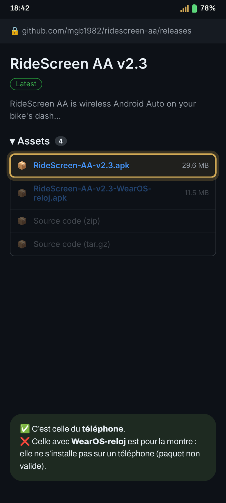
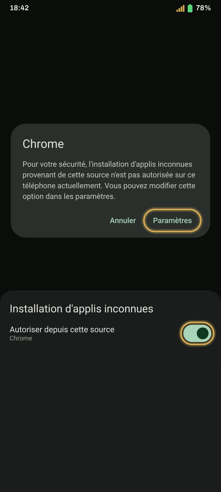
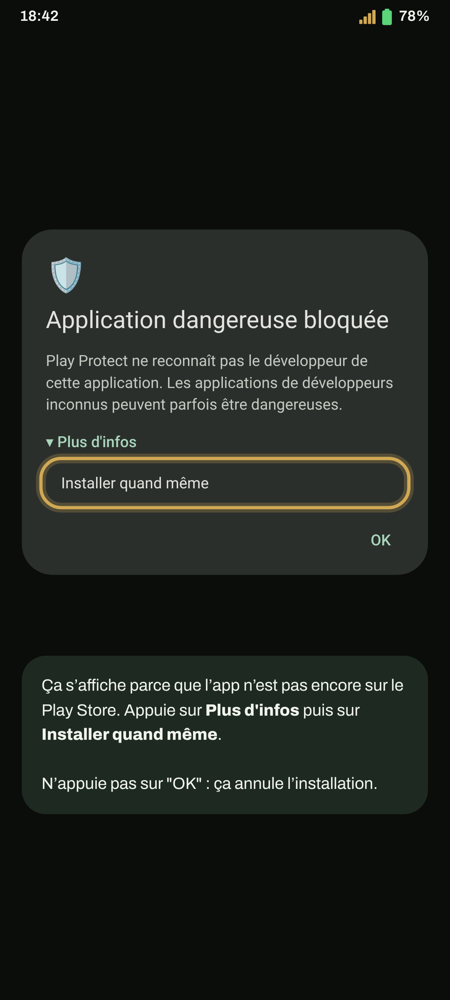
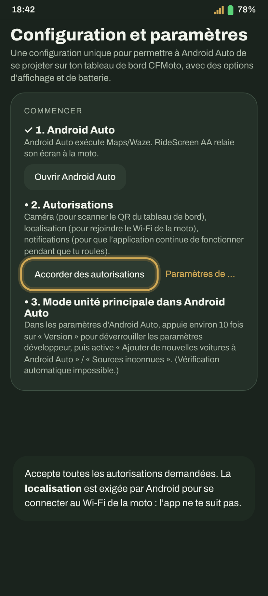
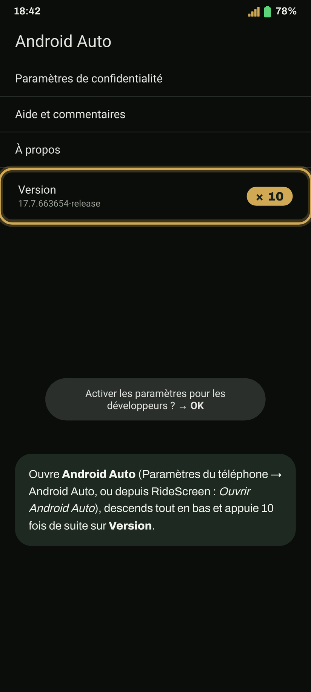
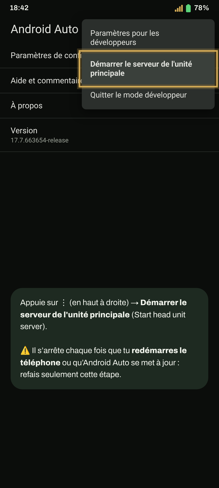
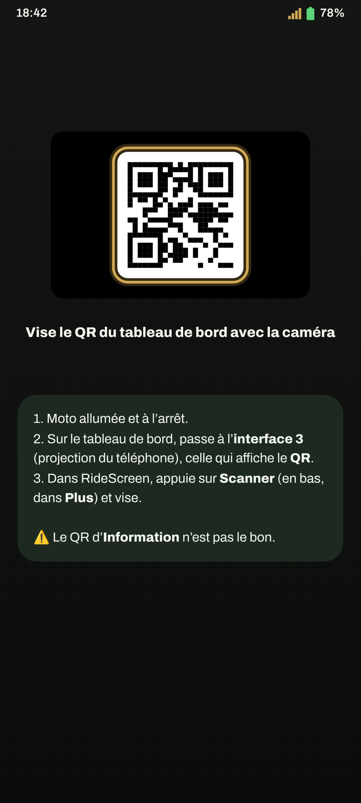
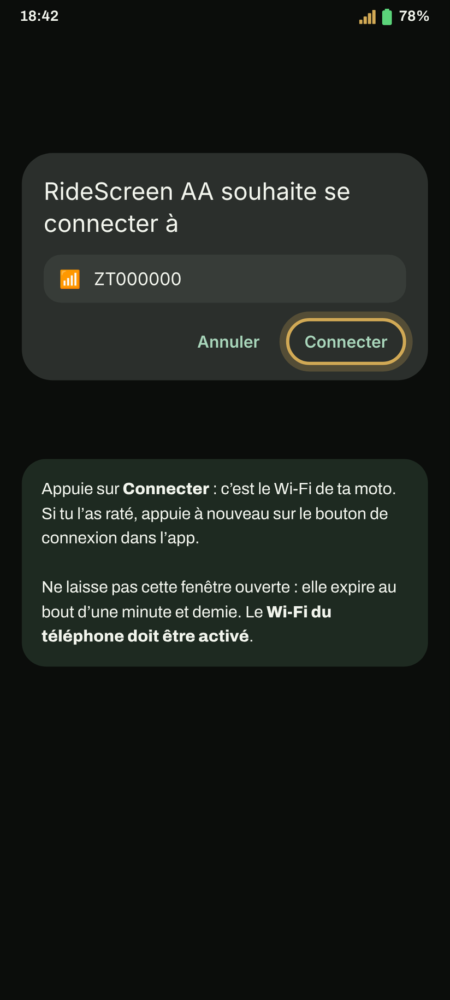
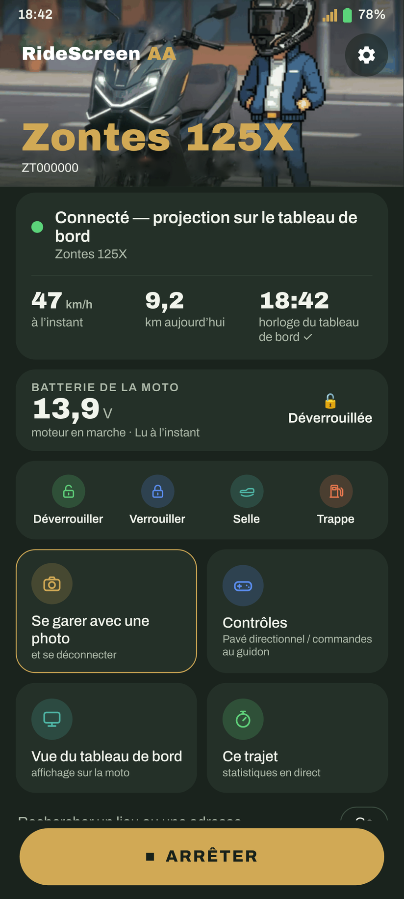

Android Auto sur le tableau de bord de ta Zontes, pas à pas. La première fois prend quelques minutes ; ensuite, un appui suffit, voire aucun.
Tu as une montre Wear OS ? Continue ensuite avec le guide de la montre.
Appuie sur le bouton : la dernière version se télécharge directement (RideScreen-AA-v2.4.1.apk ou celle du moment).
Télécharger l’APKTu préfères GitHub ? Sur la page de la dernière version, sous Assets, appuie sur l’APK qui commence par RideScreen-AA-v.

Ouvre le fichier téléchargé. Si Android dit qu’il ne peut pas installer d’applis depuis cette source, appuie sur Paramètres, active Autoriser depuis cette source et reviens en arrière.
Puis appuie sur Installer.

Ça s’affiche parce que l’app n’est pas encore sur le Play Store. Appuie sur Plus d'infos puis sur Installer quand même.

La première fois, les Réglages s’ouvrent. Accepte toutes les autorisations demandées, ou appuie sur Toutes les autorisations sont accordées pour les vérifier d’un coup.
Android exige la localisation pour se connecter au Wi‑Fi de la moto et enregistrer tes trajets. L’app ne te suit pas.

Ouvre les paramètres d’Android Auto (Paramètres du téléphone → Android Auto, ou depuis RideScreen). Descends tout en bas et appuie 10 fois de suite sur Version. Accepte l’avertissement.
Tu ne le fais qu’une fois.

Sur le même écran, appuie sur ⋮ (en haut à droite) → Démarrer le serveur de l'unité principale (Start head unit server).

Sur le tableau de bord, passe à l’interface de recopie d’écran (l’écran 3 sur la 125X) : celle de la projection du téléphone, qui affiche un code QR. Dans RideScreen, appuie sur Scanner (en bas, dans Plus) et vise-le.

Appuie sur Connecter dans RideScreen. Android demande si l’app peut se connecter au Wi‑Fi de la moto (il porte le nom de ta moto, par ex. ZT…). Appuie sur Connecter.

Quelques secondes plus tard, Android Auto apparaît sur l’écran de la moto. Tu peux ranger ton téléphone.
La prochaine fois, appuie juste sur Connecter. Pour qu’elle se connecte toute seule au démarrage de la moto : ⚙️ Paramètres → Se connecter lorsqu’un appareil Bluetooth se connecte → choisis le Bluetooth du tableau de bord (il commence par « ZT ») et autorise la Superposition sur d'autres applis.
Astuce : une fois connecté, tu peux passer le tableau de bord sur une autre interface pour voir le tableau d’origine. L’app reste connectée et continue d’enregistrer le trajet, et quand tu reviens à l’interface de recopie, Android Auto est là tout de suite.
À la première connexion, l’app demande le micro : choisis Lorsque vous utilisez l'appli pour pouvoir utiliser « Ok Google » et le bouton vocal de ton intercom.

Active le Wi‑Fi du téléphone. Pas besoin de te connecter à un réseau : l’app se connecte toute seule à celui de la moto.
L’app officielle de la moto (Zontes / EasyConnection / Carbit) monopolise la connexion au tableau de bord. Paramètres → Applications → cette app → Forcer l’arrêt, puis reconnecte. Si tu ne t’en sers pas, le plus simple est de la désinstaller.
Dans RideScreen, appuie sur ❓ Aide → Partager les journaux juste après l’échec et envoie-le au groupe en indiquant ta moto et ton téléphone. Les journaux ne contiennent ni mots de passe ni numéros de série.
RideScreen AA est gratuite et open source, basée sur OpenCfMoto d’Alexandru (zanderp). Ce n’est pas une app officielle Zontes. Les captures sont indicatives : les textes exacts peuvent varier sur ton téléphone.